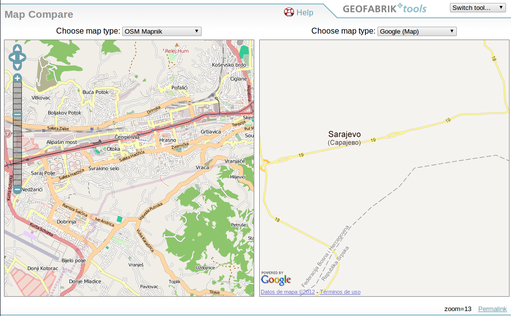
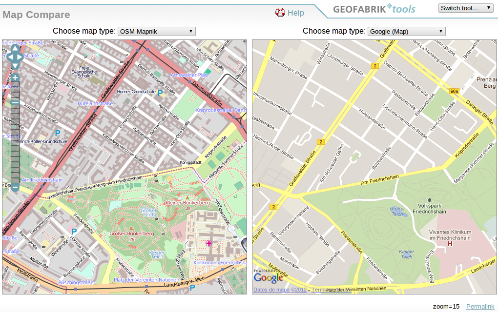
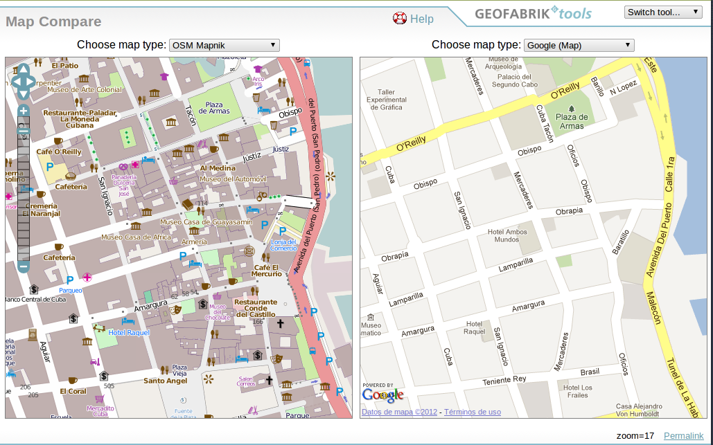
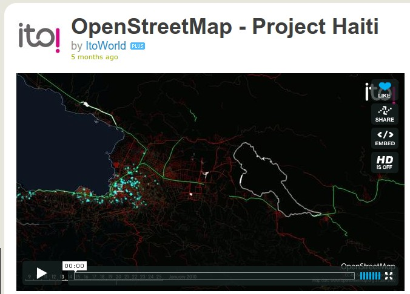
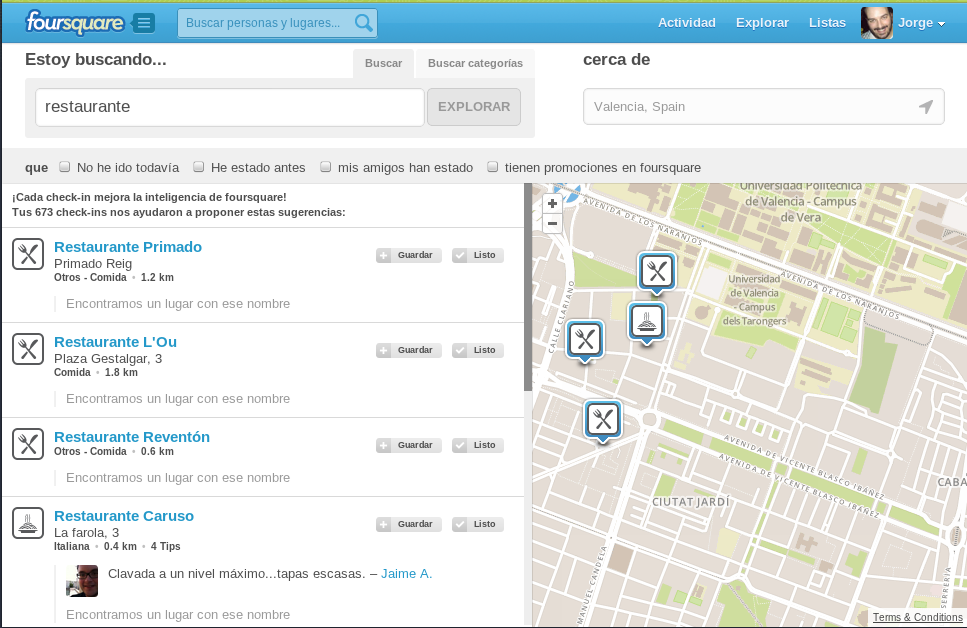
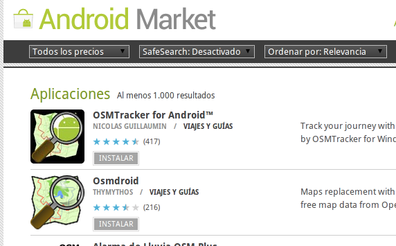

Introducción a OpenStreetMap
Primera parte
Xirivella · Mayo 2012
Antes de empezar....
- Unas preguntas para conocernos mejor...
- ¿Quién soy yo? (no te enrolles)
- ¿Experiencia creando planos o mapas?
- ¿Quién sabe qué es OSM?
- ¿Quién ha contribuido a OSM?
- OSM A year of edits 2008
¿Qué es OpenStreetMap?
Proyecto para crear un mapa colaborativo mundial
La wikipedia de los mapas


Ejercicio: colocar un marcador
Aprender a generar un mapa de OSM con un marcador
Pero a ver, ¿no tenemos ya Google Maps?

- API: restricciones de uso, publicidad, ...
- MapMaker: «vuestro trabajo es nuestro»
OSM es cartografía libre,
libre de libertad

¿Comparamos?
 Sarajevo
 Berlin

La Habana Vieja ·
wiki
El caso de Haití es muy especial
Casos de uso
¿qué puedo hacer con los datos de OSM?
¡lo que quieras!
se permite el uso comercial pero hay que dar
atribución

Mapas para tus webs como Foursquare, Nestoria, Flickr....
Pero también para tus mapas en aparatos GPS, aplicaciones móviles, mapas impresos, mapas para invidentes, proyectos de rutas, analisis de fluidos... etc.

Más de 1000 aplicaciones por la búsqueda OpenStreetMap
lo más intersante es lo que todavía no se te ha ocurrido :-)

En la
segunda parte veremos los aspectos técnicos básicos de trabajo en
OSM,
¡manos a la obra!

Referencias
- OSM: http://www.osm.org
- HOT: http://hot.openstreetmap.org/
- Comparador de cartografía de Geofabrik
- Google Map Maker, Licencia Google Maps API
- http://switch2osm.org/
- Open Database License ODbL
Licencia


¿Preguntas?
¿seguimos?